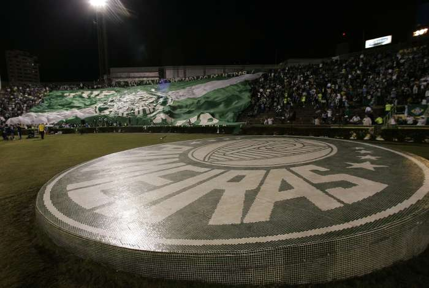
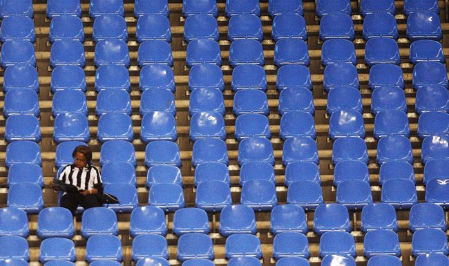

O primeiro estádio brasileiro, na verdade, não era um estádio...
Sim, é isso mesmo. O primeiro estádio brasileiro foi o Velódromo de São Paulo, que, originalmente, desde 1875 sediava competições ciclísticas. Para abrigar um jogo entre o Paulistano e o São Paulo Athletic, uma familia tradicional paulistana resolveu construir arquibancadas em torno dele, em 1902.

Quem apelidou o Palmeiras de ‘porco’ foi o rival Corinthians
E o pior é que é verdade. Em 1969, dois jogadores do Timão faleceram e o clube teve de pedir para a Federação Paulista a inscrição de mais dois atletas para a continuidade do campeonato daquele ano. O Palmeiras, contudo, foi o unico time que se opôs ao pedido corinthiano. Para protestar contra a ‘sujeira’ palmeirense, a Fiel soltou um porco no Morumbi e gritou em provocação “da-lhe porco”. Em 1986, a torcida do Verdão sucumbiu e acabou aceitando a provocação como símbolo, mascote e coro da equipe.

Brasileirão: o maior e o menor público
Se o seu palpite para o menor público é algum jogo do São Caetano, voce errou. Em 1997, no Rio Grande do Sul, Juventude e Portuguesa passaram pela vergonha de jogar no estádio Olímpico para apenas 55 torcedores, enquanto 155.523 flamenguistas e santistas tiveram a oportunidade de acompanhar a decisao do Brasileirao de 1983, disputada pelas duas equipes no Maracanã: o maior publico do campeonato nacional.
A história do Futebol no Brasil revela uma variedade de campeonatos de caráter nacional:
Taça Brasil (1959-1968): primeira competição nacional da história, criada para indicar um representante brasileiro à Taça Libertadores da América.
Reunia campeões estaduais de vários estados do país. Os campeões da
Taça Brasil fizeram um pedido de unificação dos títulos ao presidente da
CBF, Ricardo Teixeira, e no dia 22 de Dezembro 2010
os campeões da Taça Brasil tiveram seus títulos unificados pela CBF
(após a entidade analisar o dossiê produzido pelo historiador Odir Cunha a pedido dos clubes).
Torneio Roberto Gomes Pedrosa (1967-1970): o "embrião" do Campeonato Brasileiro, como ficou conhecido o "Robertão", era na prática uma versão expandida do Torneio Rio-São Paulo,
que contou com a presença de todos os clubes que futuramente seriam
campeões brasileiros. Teve apenas quatro edições e foi sucedida pelo
Brasileirão, havendo pouquíssimas diferenças entre a sua última edição,
em 1970, e a primeira edição do Campeonato Brasileiro. Em 2010,
assim como os campeões da Taça Brasil, os campeões do "Robertão", após o
pedido de unificação, também tiveram seus títulos unificados ao
Campeonato Brasileiro.[1]
Campeonato Brasileiro (desde 1971): também conhecido como Brasileirão,
de 1971 a 2002 teve 32 edições e 32 fórmulas diferentes. Desde 2003, as
equipes se enfrentam em turno e returno por pontos corridos, sistema
utilizado principalmente na Europa.
Copa dos Campeões Estaduais (1920, 1937 e 1967), Torneio dos Campeões da CBD (1969), Copa dos Campeões da Copa Brasil (1978), Torneio dos Campeões (1982), Copa União (1987): campeonatos que tiveram apenas uma edição. Grêmio Maringá foi o campeão do torneio de 1969, Atlético Mineiro foi o campeão da disputa de 1978, America-RJ foi o campeão do torneio de 1982, Flamengo foi o campeão da competição de 1987.
Copa do Brasil (desde 1989): competição disputada no sistema eliminatório a uma ou duas partidas, conhecido popularmente como mata-mata. Nela participam representantes de todos os estados.
Supercopa do Brasil
(1990-1991): Competição disputada entre o vencedor do Campeonato
Brasileiro e o da Copa do Brasil do ano anterior, num formato semelhante
às supercopas existentes em vários países da Europa. O Grêmio foi o
vencedor em 1990[2] e o Corinthians sagrou-se campeão em 1991.
Copa dos Campeões
(2000 a 2002): competição disputada entre os melhores colocados nas
copas regionais (Rio-São Paulo, Sul-Minas, Nordestão, Copa Norte e Copa
Centro-Oeste) que indicava o campeão para a Libertadores.
Campeões
Ano
Campeonato Brasileiro
Copa do Brasil
Torneios entre Campeões(1)
1920
Paulistano
1937
Atlético Mineiro
1959
Bahia
1960
Palmeiras
1961
Santos
1962
Santos
1963
Santos
1964
Santos
1965
Santos
1966
Cruzeiro
1967
Palmeiras(2) / Palmeiras(3)
Bangu
1968
Botafogo(2) / Santos(3)
1969
Palmeiras
Grêmio Maringá
1970
Fluminense
1971
Atlético Mineiro
1972
Palmeiras
1973
Palmeiras
1974
Vasco da Gama
1975
Internacional
1976
Internacional
1977
São Paulo
1978
Guarani
Atlético Mineiro
1979
Internacional
1980
Flamengo
1981
Grêmio
1982
Flamengo
America
1983
Flamengo
1984
luminense
1985
Coritiba
1986
São Paulo
1987
Sport
Flamengo
1988
Bahia
1989
Vasco da Gama
Grêmio
1990
Corinthians
Flamengo
Grêmio
1991
São Paulo
Criciúma
Corinthians
1992
Flamengo
Internacional
1993
Palmeiras
Cruzeiro>
1994
Palmeiras
Grêmio
1995<
Botafogo
Corinthians
1996
Grêmio
Cruzeiro
1997
Vasco da Gama
Grêmio
1998
Corinthians
Palmeiras
1999
Corinthians
Juventude
2000
Vasco da Gama
Cruzeiro
Palmeiras
2001
Atlético Paranaense
Grêmio
Flamengo
2002
Santos
Corinthians
Paysandu
2003
Cruzeiro
Cruzeiro
2004
Santos
Santo André
2005
Corinthians
Paulista
2006
São Paulo
Flamengo
2007
São Paulo
Fluminense
2008
São Paulo
Sport
2009
Flamengo
Corinthians
2010
Fluminense
Santos
2011
Corinthians
Vasco da Gama
2012
Fluminense
Palmeiras
2013
Cruzeiro
Flamengo
2014
Cruzeiro
Atlético Mineiro
(1) Competições
realizadas entre vencedores de diferentes torneios do Brasil
(Campeonatos estaduais, regionais ou nacionais). 1920, 1937 e 1967: Copa
dos Campeões Estaduais; 1969: Torneio dos Campeões da CBD; 1978: Copa
dos Campeões da Copa Brasil (CBD); 1982: Torneio dos Campeões da CBF;
1987: Copa União (Clube dos 13); 1990 e 1991: Supercopa do Brasil (CBF);
2000 a 2002: Copa dos Campeões (CBF).
(2) Em 1967 e 1968, foram realizados dois campeonatos brasileiros. Esta colocação refere-se ao torneio denominado na época de Taça Brasil.
(3) Em 1967 e 1968,
foram realizados dois campeonatos brasileiros. Esta colocação refere-se
ao torneio denominado na época de Torneio Roberto Gomes Pedrosa.